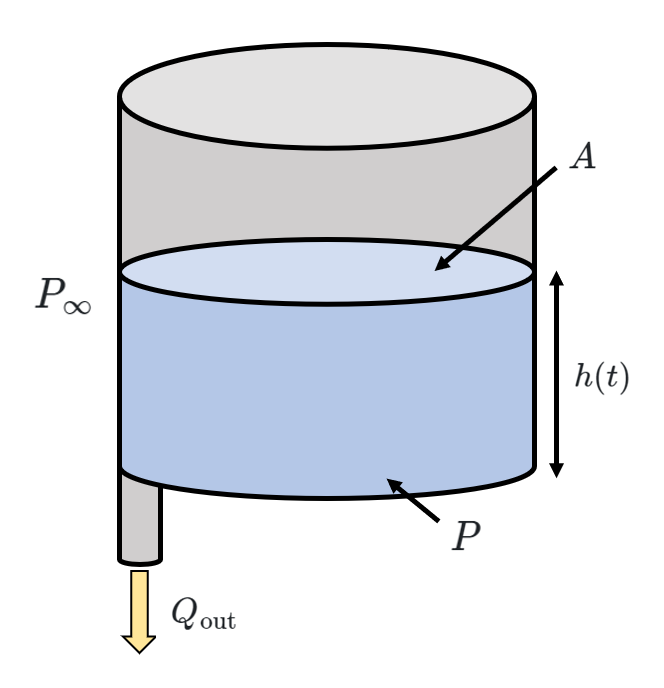
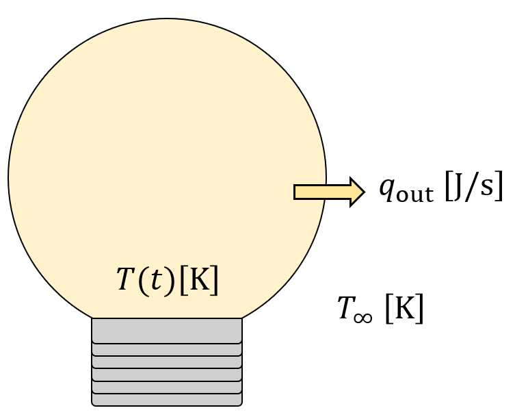

2 The First Order
Preface
We’ll grow more accustomed to the idea of analogical models after modeling a few simple systems. Let’s start by throwing out some fundamental systems and developing intuition to dive into simplified models.
- Emptying a water tank
- Cooling of a lightbulb
- Discharge of an RC circuit
2.1 Gradients Make Stuff Flow
A cylindrical tank has a cross-sectional area of \(A\), and an outflow rate of \(Q_\text{out}\). The water height is governed by the function \(h(t)\). The pressure outside the tank is \(P_{\infty}\), and the fluid has a density of \(\rho\). Can we derive a governing equation for this system in terms of \(\Delta P = P - P_{\infty}\), where \(P(t)\) is the pressure at the bottom of the tank?

First off, because the tank is cylindrical, it’s apparent that the volume \(V(t)\) of water in the tank is proportional to the value of \(h(t)\).
\[V(t) = A h(t)\]
Because of conservation of mass, we know the rate at which the volume is changing is the difference between the inflow and the outflow.
\[\frac{d}{dt} V(t) = \dot{V} = 0 -Q_\text{out} = -Q_\text{out} \tag{1}\]
That’s not very useful yet. Let’s leverage some prior circuits knowledge here…charge moves because of a voltage difference \(\Delta V\), and comparably, fluid moves because of a pressure difference.1 Ohm’s law! We’ll come back to that, but the main takeaway here is that the outflow \(Q_\text{out}\) is related to the difference between the pressure inside the tank \(P(t)\) and the atmospheric pressure \(P_\infty\) by a “resistance” value \(R\).
That circuits analogy comes in handy really often, because it turns out Ohm’s law translates directly into fluid flow.
\[\Delta V = V - V_0 = IR\] \[\Delta P = P(t) - P_\infty = Q_\text{out} R \tag{2}\]
These are called constitutive equations, or relationships between physical quantities that establish a connection between a material’s internal response (like stress, strain, or deformation) and the external factors that influence it (like temperature, pressure, or applied loads).
We’ll generalize a bit soon, but for now I understand if you don’t get it. It’s still very hand-wavey.
Let’s leverage some hydrostatics now. Assuming the tank is open to the atmosphere at the top, we can derive an expression for \(\Delta P\) using the hydrostatic pressure equation \(\Delta P = \rho g \Delta h\).
\[\Delta P = P(t) - P_\infty = \rho g \left(h(t) \right) = \frac{\rho g V}{A}\tag{3}\]
Differentiating equation (3) yields the following:
\[ \dot{P} = \frac{\rho g \dot{V}}{A} \]
Using equations (1) and (2), we can manipulate this equation into a differential equation in terms of pressure differences.
\[ \dot{P} = \frac{\rho g \left(- Q_\text{out} \right)}{A} = \frac{- \rho g \Delta P}{A R}\]
\[\dot{P} + \frac{\rho g}{A R} \Delta P = 0\]
\[R \left( \frac{A}{\rho g}\right) \dot{P} + \Delta P = 0\]
This is a neat little differential equation. It looks like the equation for an RC circuit if you’ve seen those before, with the voltage differences swapped out for pressure differences. To really drive this comparison home, we define a “capacitance” \(C = \frac{A}{\rho g}\) and slot it into our governing equation.
\[\boxed{RC \dot{P} + \Delta P = 0}\]
Perfect. Note that this isn’t the only possible governing equation of the system - it’s also possible to find a differential equation in terms of volume \(V(t)\). Give it a go!
Let’s move onto a second example: the cooling of a lightbulb. When we shut off power to the lightbulb, how can we measure its temperature as it cools to room temperature?

The bulb is initially very hot (with temperature \(T\)) compared to its environment (which has temperature \(T_\infty\)). Heat is flowing outwards at \(q_\text{out}\). This is seeming very familiar…a temperature difference is driving heat to leave through the resistance \(R\) of the bulb.
Let’s go through the steps again. Energy’s being conserved here, so we use the capacitive relationship relating accumulated heat \(Q\) and temperature \(T\) from ESC330:
\[\Delta Q = C \Delta T\]
Differentiate across the board…
\[\frac{d}{dt} \left(C \Delta T \right) = C\dot{T} = -q_\text{out}\]
And now we’re just chugging through the motions. Next is another constitutive relationship (which looks shudderingly close to Ohm’s law!):
\[\Delta T = T - T_\infty = q_\text{out} R\]
We combine the last two equations and construct:
\[\boxed{RC \dot{T} + \Delta T = 0}\]
Again. Familiar. Very familiar. Maybe there’s some unifying theory in the background here. We’ll generalize that equation to what we call its canonical form \(\tau \dot{y} + y = 0\), a first order differential equation. Let’s throw in an initial condition \(y(0)=y_0\) just so we don’t have any undetermined constants at the end.
To solve this differential equation, we’ll guess a solution \(y(t) = ce^{\alpha t}\), find its time derivative \(\dot{y}(t) = \alpha ce^{\alpha t} = \alpha y\), and plug in.
\[\tau \dot{y} + y = 0\] \[\tau \alpha e^{\alpha t} + e^{\alpha t} = 0\] \[(\tau \alpha + 1) \; e^{\alpha t} = 0\] \[\alpha = -\frac{1}{\tau}\] \[y(t) = ce^{-\frac{t}{\tau}} = y_0 \; e^{-\frac{t}{\tau}}\]
If you look at the graph below, it’s just exponential decay from \((0, y_0)\). We call \(\tau\) the time constant of the system, and it’s commonly used to describe how quickly an exponential decays or grows. Different systems have different time constants. (Notably, \(RC\) always has units of time). The smaller the time constant, the faster the decay. (Assume for the figure below that \(\tau_1 = 10\) and \(\tau_2 = 5\).)
So what happens when we set \(t=\tau\)? Let’s plug it in and find out.
\[y(\tau) = y_0 e^{-\frac{\tau}{\tau}} = y_0 e^{-1}\]
So the time constant is the time at which the system response has decayed to \(y_0 e^{-1}\), or approximately 37% of its initial value. We can also reframe this definition as, “the time constant is the time at which the system response has lost approximately 63% of its initial value”.
2.2 The RC Circuit and Final Generalization
Say we have an RC circuit with a full capacitor.
The outflow of charge from the capacitor is represented as a negative current: \[\dot{q} = -I_\text{out}\]
Here’s Ohm’s law: \[\Delta V = I_\text{out} R = -\dot{q} R\] \[\dot{q} = -\frac{\Delta V}{R}\]
Finally, we deal in the capacitive relationship (from Ph213): \[q = C\Delta V\]
We differentiate the capacitive relationship in order to set these equations equal to each other and get:
\[C\dot{V} = -\frac{\Delta V}{R}\] \[\boxed{RC \dot{V} + \Delta V = 0}\]
which is the same equation we’ve gotten before. (Notably, we don’t have to have this equation in terms of the voltage difference; as you’ll see in ESC221 this semester, there’s a form of the equation in terms of current as well.)
Final takeaways:
- Most first order systems we’ll analyze in this class are the same mathematically!
- Level differences (gradients) make stuff flow.
“Stuff” isn’t the greatest word for something like this, (maybe quantity or ‘energy’ instead?) but that’s the best we have. Stuff can be stored, like charge in a capacitor, or fluid in a tank, or heat in a reservoir. However, by generalizing these quantities, we can create widely applicable rules for modeling first order systems.
\[\text{Stuff} = \text{Capacitance} \times \text{Level Difference}\] \[\text{Level Difference} = \text{Flow of Stuff} \times \text{Resistance}\]
Also conservation. That’s a biggie. \[\text{Rate of Change of Stuff} = \text{Inflow} - \text{Outflow}\]
We’ve only discussed scenarios where there isn’t anything flowing in thus far. In these cases, to solve nonhomogeneous differential equations, we’ll have to use more specialized methods from Ma240 instead of guessing and praying, like the Laplace transform or the method of undetermined coefficients (or as I affectionately call it, MUC).
2.3 Let’s Throw in an Input
A more simple form of the governing equation for one of these first order systems is:
\[\tau \dot{y} + y = ku\]
when we have a constant input. Think of it as turning on a light switch at time \(t=0\). \(k\) is just a scale factor, and \(u = u_s(t)\), where \(u_s\) is the unit step function, which is just \(0\) when \(t<0\) and \(1\) when \(t>0\).2
\[y(t) = ce^{-\frac{t}{\tau}} + k\]
For the initial condition \(y(0) = y_0\), the undetermined coefficient \(c=y_0 - k\). Here’s our updated solution:
\[y(t) = y_0 e^{-\frac{t}{\tau}} + k(1-e^{-\frac{t}{\tau}})\]
When we graph this function for \(y_0 = 0\), we see that it gradually grows towards \(y=k\) as \(t\to\infty\). Now we can analyze exponential growth. You see this behavior everywhere, like when you change a thermostat setting and the temperature slowly creeps towards your choice. This is what we call a step response.
How could we find the time constant of this response? Let’s take a look at what happens to \(y(t)\) at \(t=\tau\).
\[y(\tau) = y_0 e^{-\frac{\tau}{\tau}} + k(1-e^{-\frac{\tau}{\tau}})= y_0 e^{-1} + k(1-e^{-1})\]
When we set \(y_0 = 0\), this further simplifies to:
\[y(\tau) = k(1-e^{-1}) \approx 0.63 k\]
For this system, at \(t=\tau\), the system response will have accumulated 63% of its steady state value.
The step input is just one of the test inputs we usually use; we’ll look at a few more as the course progresses (such as sinusoidal waves, delta functions, etc.).